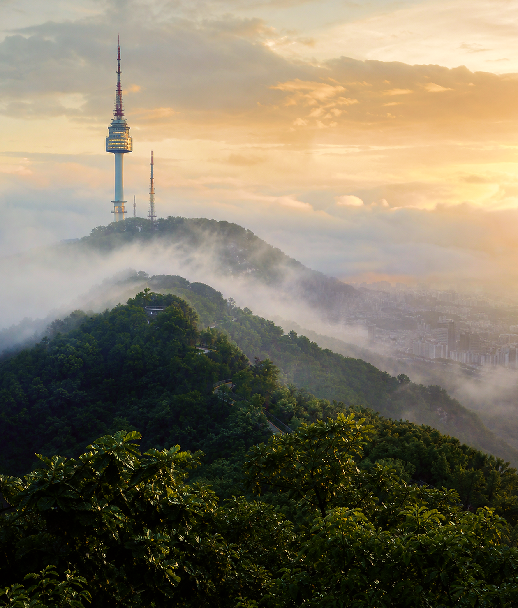

About
N Seoul Tower
: A Romantic Island in the Heart of the City
Where the sky meets the clouds
N Seoul Tower is a multifunctional cultural space in Seoul that offers a perfect harmony of Namsan's natural beauty and 21st-century cutting-edge technology, along with leisurely relaxation and a diverse array of cultural experiences.